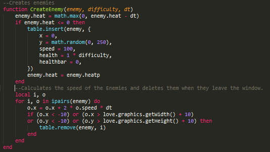

Dokumentation
Robin Steiger
CheckCollision()
Die
Funktion CheckCollision habe ich nicht selber erstellt, sondern vom
Love2d-Wiki.
Die Funktion erkennt wenn zwei Objekte sich überschneiden und
kann verwendet werden um eine Kollision zu erstellen.
CreateEnemy()

Die
Funktion CreateEnemy fügt Gegner in eine Tabelle ein und
berechnet wie sie sich über den Bildschirm bewegen, ebenfalls
löscht sie Gegner die sich ausserhalb des Bildschirmes befinden.
EnemyBullets()
Die
Funktion EnemyBullets fügt für jeden Gegner Schüsse in
eine Tabelle ein, hier werden ebenfalls die Flugbahnen der Schüsse
berechnet, sowie das Löschen der Schüsse beim Verlassen des
Bildschirmes. Diese Funktion funktioniert nicht richtig, ich habe
aber bisher noch keine Lösung gefunden.
PlayerBullet()
Die
Funktion PlayerBullet fügt immer wenn die Space-Taste gedrückt
ist, Schüsse des Spielers in eine Tabelle ein, die Flugbahnen
dieser wird danach berechnet, auch hier werden die Schüsse beim
Verlassen des Bildschirmes gelöscht.
DrawTable()
Die
Funktion DrawTable zeichnet den Inhalt einer Tabelle, sofern ein Bild
definiert ist.
BossAttack1()

Die
Funktion BossAttack1 fügt die Schüsse des Bosses in eine
Tabelle ein. Auch hier werden wieder die Flugbahnen berechnet, hier
wird einfach noch der Winkel angegeben, in welchen die Schüsse
sich bewegen sollen. Verlassen die Schüsse den Bildschirm werden
sie gelöscht.
BossAttack2()
Die
Funktion BossAttack2 fügt die Schüsse des Bosses in eine
Tabelle ein. Der Punk auf der X-Achse ist hier zufällig
generiert. Die Flugbahnen der Schüsse werden auch hier in der
Funktion selbst berechnet. Verlassen die Schüsse den Bildschirm
werden sie gelöscht.
Weitere
Strukturen
Hier
werde ich einige weitere Strukturen aufzeigen, wie z.B. Bewegung des
Spielers oder Beenden des Spieles.
Bewegung
Der
Spieler kann sich mittels WASD in alle Richtungen bewegen.
Spiel
schliessen

Mittels
der Escape-Taste kann man das Spiel ganz einfach schliessen, dabei
wird nichts gespeichert.
Bilder
laden
Um
Bilder verwenden zu können, müssen diese zuerst vorgeladen
werden.
Lebensbalken
Alle
meine Gegner und der Spieler besitzen einen Lebensbalken. Dieser
funktioniert wie folgt.
Ausschnitt
aus der CheckCollision Funktion.
Jedes
Mal wenn z.B. der Spieler getroffen wird, wird einer Variablen ein
Betrag, hier 10, hinzugefügt. Dieser wird dann später beim
Zeichnen des Lebensbalkens wieder abgezogen.
SpaceShooter
Spiel
Hier
einige Screenshots vom Endprodukt.
Game
Over Screen, hier wird der erreichte Score ausgegeben. Man kann das
Spiel neustarten in dem man „r“ drückt.
:
Boss Kampf